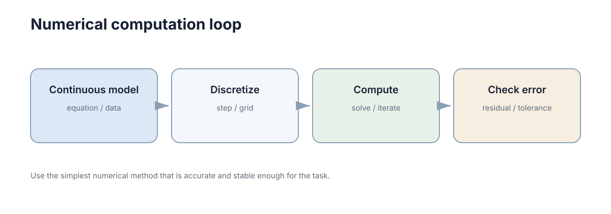
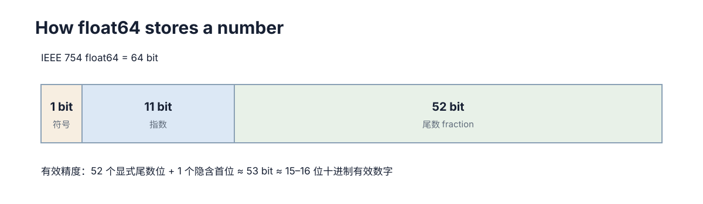

Numerical Computation
你在计算器或 Excel 里敲过
=0.1+0.2，它给你0.30000000000000004。这一章就从那一格开始：先把”误差为什么必然存在”推出来，再回答工程上真正要回答的三个问题——误差有多大、从哪来、会不会被放大。
一、先看你已经撞见过的一件事
打开 Python，敲这一行：
>>> 0.1 + 0.2
0.30000000000000004
>>> 1.1 - 1.0
0.10000000000000009你并没有写错。加法本身没有变坏，变坏的是”0.1”这个数本身存不进机器。
从这两行里，其实能拆出四条你早就会、只是没命名的直觉：
- 数字存不下无限多位，所以每写一步就四舍五入一次。 0.1 是十进制里的有限小数，在二进制里却是无限循环小数，存进去就要被砍一刀。这一刀砍出来的东西叫舍入误差。
- 两个很接近的数相减，答案里几乎全是那把刀的痕迹。 有效位被抵消掉了，这叫灾难性抵消。
- “导数”“积分”机器不会算，只能拿两个点的值相减再除以距离。 于是步长（步长、网格间距、采样周期）变成了一个必须选的参数，而且不是越小越好。
- “程序不报错、曲线很光滑”和”结果对”是两件事。 光滑的发散曲线比毛刺的曲线更危险，因为它看起来能用。
这一章就把这四条一条条推一遍。目标不是让你会手算浮点数，而是让你拿到一个数值结果时，能判断它值不值得信。
二、最直接的办法为什么一定坏
你大概会想：既然位数不够，那就多存几位；再不行就用分数、用符号计算，精确算完再取近似值。
三条路都试过了，都会被挡回来：
- 多存几位：float32 改成 float64 改成 float128，有效十进制位从 7 涨到 16 涨到 34。但实数有不可数多个，有限个 bit 能表示的只有有限多个数——中间总有无穷多个实数落在两个可表示数的缝隙里，必须被舍入到其中一个。 缝隙变窄，但不会消失。
- 用精确有理数：
1/3在有理数里是精确的，但sqrt(2)、pi、sin(1)不是有理数；更麻烦的是每做一次运算，分子分母的位数就膨胀一次，几次迭代后一个数就要占满内存。 - 用符号计算：你确实能精确地得到
pi这个符号。可你最终要拿来控制一个电机、要让仿真往前推一步——那时候你必须把它变成一个具体的浮点数。
所以结论是被逼出来的，不是被规定的：
只要用有限个 bit 表示连续量，误差就必然存在，而且会在每一步运算里重复发生。 这不是某种编程语言或某个库的缺陷，换 C++、换 MATLAB 完全一样。
既然消灭不了，工作内容就变成了另外三件事。贯穿全章的三问：
| 问题 | 对应章节 | 典型手段 |
|---|---|---|
| 误差有多大？ | 三、四、五节 | 量级估计、误差预算 |
| 从哪来？ | 二、四、六节 | 分辨建模/离散/测量/舍入 |
| 会不会被放大？ | 七、八、十节 | 条件数、正则化、重标定尺度 |
先把图看清楚：数值计算的全过程，就是”连续世界 → 离散表示 → 有限精度运算 → 近似结果”这条流水线，误差在每一站都会进场。

误差至少有四个来源，它们的处理方法完全不同，混在一起谈就永远谈不清：
| 误差来源 | 具体表现 | 是否随时间累积 | 补救手段 |
|---|---|---|---|
| 建模误差 | 模型假设与真实物理不符 | 是，随预测步数增长 | 改模型、在线辨识 |
| 离散误差 | 步长过大、差分截断 | 是，与步长和系统刚性有关 | 减小步长、换高阶格式 |
| 测量误差 | 传感器噪声与偏差 | 随机部分不累积，偏差会 | 滤波、标定 |
| 舍入误差 | 每次浮点运算引入约 (u) 的相对误差 | 是，随运算次数累积 | 换算法、重排运算顺序 |
注意第三、四行的量级差距：测量误差常在 (10^{-2}) 量级，舍入误差在 (10^{-16}) 量级。如果噪声已经占了 (10^{-2})，把浮点精度从 16 位提到 34 位，一点用都没有。 这句话在后面第九、十节还会用到。
三、误差长什么样：绝对、相对、单位舍入
误差有两种报法，工程上只盯第二种：
- 绝对误差：(x = x - x)，单位跟物理量相同。
- 相对误差：(x / |x|)，无量纲，直接告诉你”还剩几位可信”。
为什么盯相对误差？看同一个绝对误差 (10^{-6}) 在两个变量上的意义：
| 变量 | 典型值 | 绝对误差 (10^{-6}) 意味着 |
|---|---|---|
| 机器人位置 | (10^{0}) m | 1 微米，完全可以忽略 |
| 归一化相关系数 | (10^{0}) | 百万分之一，可以忽略 |
| 某个接近零的差值 | (10^{-9}) | 相对误差 1000%，结果已成噪声 |
同一把尺子，换一个量级就完全失效。 这就是为什么容差必须写成相对形式 ((1,|a|,|b|))，而不是硬编码一个 (10^{-6})。
那”相对误差最小能到多少”？看浮点数的排布。IEEE 754 双精度把 64 位分成三段：

尾数 52 位加上隐含的 1 位，共 53 位二进制有效位，折算成十进制是 (53_{10}2)——所以工程上说 float64 有 15–16 位有效数字。相邻两个可表示数之间的间距叫机器 epsilon：
[ _{,64}=2{-52}{-16}, u=^{-16}. ]
(u) 叫单位舍入，含义是：把任意实数存成 float64，相对误差不超过 (u)。
| 类型 | 尾数位 | (_{}) | 十进制有效位 | 典型用途 |
|---|---|---|---|---|
| float16 | 10 | (^{-4}) | 约 3 位 | 推理加速，必须自带误差分析 |
| float32 | 23 | (^{-7}) | 约 7 位 | 图形、嵌入式控制 |
| float64 | 52 | (^{-16}) | 约 16 位 | 仿真、估计、优化的默认选择 |
| float128 | 112 | (^{-34}) | 约 34 位 | 极端病态问题（慢，少用） |
一个可验算的推论：量级为 (10^{6}) 的物理量（比如一个以毫米为单位存的大坐标），它的绝对分辨率是
[ 10{6}{-16}^{-10}. ]
也就是 (10^{-4}) 毫米。你在讨论”毫米级精度”的时候，机器其实早就比你精细了六个数量级——在 float64 下”精度不够”极少是舍入的锅。
四、相减为什么会让误差”爆炸”
这一节是本章第一个要请你亲手推的地方，不要跳。
设 (y=x_1-x_2)，两个数各自带一点绝对误差 (x_1,x_2)。那么
[ y=x_1-x_2, =. ]
看这个式子的分母。绝对误差没有放大（最多变成两倍），可相对误差的分母是 (x_1-x_2)——当两个数靠得很近时，分母趋近于零，相对误差就爆炸性地涨上去。
代个小数字。取 (x_1=1.000000001)、(x_1=1.000000000)，差是 (10^{-9})。两个数各自的绝对误差最多 (10^{-16})，于是差值的相对误差最多
[ =2^{-7}. ]
也就是说，本该有 16 位可信的运算，结果只剩 7 位左右可信。这就是灾难性抵消（catastrophic cancellation）：输入完全正常，输出有效位凭空少了一半。
它真的会咬人：一个代数等价改写
初中就学过的求根公式
[ x= ]
在 (b^24ac) 时会出事。取 (a=1)、(b=-10^{8})、(c=1)（方程 (x2-10{8}x+1=0)），两个根分别是 (10^{8}) 和 (10^{-8})。这时 (=^{8})，两个分支就分家了：
- (-b+^{8})：两个大数相加，结果量级不变，安全；
- (-b-{8}-10{8})：两个几乎相等的数相减，危险。
实测那个小根：坏写法给出 (7.45^{-9})，真值是 (10^{-8})——相对误差 25%，16 位精度摔到不足 1 位。 整段代码只做了一个减法和一次除法，没有任何”复杂算法”。
改写办法是先用根与系数的关系 (x_1x_2=c/a)：把安全的那一个根算出来，另一个根用除法反推，相减就被换成了相加：
[ x= . ]
同一个数学问题、同一批输入、同一张纸上等价的公式，实测精确给出 (10^{-8})，相对误差 0。 这就是”选公式”这件事在数值上的全部含义。
三个同族的改写技巧，逻辑都一样——别让两个大而接近的量去相减：
- 补偿求和（Kahan 求和）：把一个”没加进去的低位零头”单独记账，每步从下一项里扣回来。它让 (n) 项求和的误差不再随 (n) 线性增长。
- Welford 递推算方差：不用 (x_i2-(x_i)2/n) 这种”两个大数相减”的形式，改成增量式更新均值与方差。
- 先中心化：在自定义损失/残差里，先把数据减去均值再算平方和。
求和误差到底多大
把 (n) 个数顺序相加，最坏情况每一项的相对误差都同向叠加：
[ n u, n,u . ]
(n=10^{6}) 时代进去：
[ n u^{-10}, n,u^{-13}. ]
两个数字，两个结论：
- 百万项求和的误差在 (10{-13}10{-10})，对绝大多数工程问题无所谓；但如果答案本身就只有 6 位有效数字（比如一个接近零的差值、一个很小的方差），误差已经把它吞掉了。
- 想减小误差，最便宜的招是改求和顺序：分块（树形）求和把 (n u) 换成 (_2 nu)。百万项时 (_2 10^{6})，误差从 (10^{-10}) 降到约 (2^{-15})——同一批数、同一个算法，只换了加的顺序，差三个数量级。
最后一个反直觉的事实：判断两个浮点数相等几乎没有意义。 (a) 和 (b) 各自带 (u) 量级的相对误差，a == b 在应该相等的地方常常为假。正确写法是相对容差判据：
[ |a-b|(1,|a|,|b|). ]
五、导数只能靠减法，所以步长有个最优值
机器不会算 (_{h})。它能做的只有：取两个点、相减、除以距离。这叫有限差分。
[ f’(x) (O(h)), ]
[ f’(x) (O(h^2)). ]
括号里是截断误差的阶：前向差分是 (O(h))，中心差分是 (O(h^2))。看到这里，第一反应一定是”那就把 (h) 取小，一直取小”。这个直觉是错的，而且错得很具体。
推一遍：为什么 h 不能太小
总误差是两项之和：
- 截断误差：泰勒展开砍掉的那些项，前向差分约 (h)，随 (h) 变小而变小；
- 舍入误差：(f(x+h)) 和 (f(x)) 各自带 (u) 量级的相对误差，相减之后再除以 (h)，所以这一项大约是 ()，随 (h) 变小而变大。
一个随 (h) 涨、一个随 (h) 降，因此中间一定有一个最优点。以前向差分为例：
[ E(h)+h ;; E’(h)=-+=0 ;; h=,E(h). ]
取 (u=1.11^{-16})、(M_2=1)，得 (h{-8})，此时相对误差也约 (10^{-8})。这就是”前向差分只能给你 8 位有效数字”的来历——你有 16 位浮点，却只能用上 8 位。
中心差分同理，两头一起降噪但截断是二次的：(h(6u/M_2){1/3}^{-6})，最优误差约 (u{2/3}{-11})。
| 格式 | 截断误差 | 总误差量级 | 最优步长 (h^) | 最优时的相对误差 |
|---|---|---|---|---|
| 前向差分 | (O(h)) | (+h) | (^{-8}) | (^{-8})（实测 (3^{-9})） |
| 中心差分 | (O(h^2)) | (+h^2) | (^{-6}) | (^{-11})（实测 (3^{-11})） |
| 复数步长法 | (O(h^2))，无相减抵消 | 无抵消项 | 可取到极小 | (u)（接近机器精度） |
直觉失效的那个点
前向差分里，(h=10^{-16}) 时 (x+h) 已经和 (x) 在浮点下相等，分子变成 0，导数算成 0，相对误差 100%。
“步长越小越准”在这里彻底失效——不是变差一点，是从 8 位有效数字直接掉到 0 位。这也是自动微分（automatic differentiation）优于手工差分的根本原因：它按链式法则组合每一步的局部导数，全程不引入”两个大数相减”，所以能拿到接近 (u) 的精度。
六、把连续系统搬进机器：离散化和稳定性
上一节的差分只管”算一个导数”。动态系统要往前推很多步，问题更大。最简单的显式 Euler 是
[ x_{k+1}=x_k+t,f(x_k,u_k), ]
单步局部截断误差 (O(t^2))，(N) 步累积的全局误差 (O(t))。
推一遍：稳定步长是从哪来的
取最简单的标量系统 (x=x)，并且 (<0)（真实解单调衰减到 0）。任何数值格式都能写成 (x_{k+1}=R,x_k) 的形式，(R) 叫放大因子。误差要不要被放大，只看 (|R|)：
- 显式 Euler：(R=1+t)。要求 (|1+t|)，解得
[ t. ]
- 隐式 Euler：(x_{k+1}=)，(R=)。因为 (<0)，分母恒大于 1，所以 (|R|<1) 对任意 (t) 成立。
- 梯形法：(R=)，同理 (|R|<1) 恒成立（A-稳定），而且精度是 2 阶。
代一个具体数字：(||=1000)。显式 Euler 要求 (t)；隐式 Euler 在 (t=0.1) 下依然稳定。
| 格式 | 迭代式 | 稳定条件 | 精度阶 |
|---|---|---|---|
| 显式 Euler | (x_{k+1}=(1+t)x_k) | (t/ | |
| 隐式 Euler | (x_{k+1}=) | 对任意 (t) 稳定 | 1 |
| 梯形法 | (x_{k+1}=x_k) | A-稳定 | 2 |
| 显式 RK4 | 多级组合 | (t/ | |
| 蛙跳/辛格式 | 交错的半步更新 | 条件稳定，保能量近似 | 2 |
稳定和精确是两件事
隐式 Euler 能取很大的步长，但大步长下的解依然不准——稳定只保证”不发散”，不保证”对”。(t=0.1) 时它给出的曲线是平滑的、单调下降的、看起来非常合理，但衰减速率可能差了好几倍。
这就引出了工程上最危险的一种组合：稳定但错误。它的结果平滑无毛刺，特别容易被当成可用结果写进仿真报告。判断方法只有一个，而且很便宜——步长减半实验：
把 (t) 减半再算一遍。若结果变化远大于你估计的截断误差量级，说明误差由离散偏差主导，该换格式而不是继续减步长；若结果几乎不变，说明已经进入渐近收敛区，可以放心用。
两倍计算量，一次性排除一大类”看起来正常但不可信”的结果。
有两种离散偏差必须分开看
- 精度偏差：往好里减小步长就能改善，属于上面那个讨论。
- 系统性缺陷：减小步长改善不了，因为它错在结构上。最典型的是能量漂移：无阻尼摆、轨道运动这类守恒系统，用显式 Euler 积分久了，振幅会单调地增大或衰减，能量是系统性漂走的。这类问题要换辛格式（半隐式 Euler、Verlet、蛙跳），它们在同一步长下能让能量近似有界，代价是精度阶不高。
所以格式选择的原则不是”阶数越高越好”，而是看任务要什么：
| 你关心的是 | 选什么 | 原因 |
|---|---|---|
| 短时精度 | 高阶 RK（如 RK45） | 同样步长下截断误差小得多 |
| 长期定性行为 | 辛格式 | 能量有界，不发散也不衰减 |
| 刚性系统 | 隐式 + 自适应步长 | 显式格式的步长被最快尺度锁死 |
“刚性”（stiffness）可以这样判断：若状态里最大与最小时间尺度之比超过 (10^{2})，固定步长的显式方法要么被最快尺度锁死步长（计算量爆炸），要么不稳定。也可以直接做步长减半实验看是否发散。自适应步长的作用就是在误差估计大的区间自动缩小 (t)、在平坦区间放大步长，把精度预算花在刀刃上。
七、条件数：问题本身的放大倍数
到这一节为止，谈的都是”算的过程中引入了多少误差”。还有一个更根本的问题：问题本身对扰动有多敏感？
推一遍：误差放大不等式
解线性方程组 (Ax=b)。假设右端项被扰动成 (b+b)，解变成 (x+x)：
[ A(x+x)=b+b ;; x=A^{-1}b . ]
取范数，两边分别除以 (|x|) 和 (|b|)：
[ |x||A^{-1}|,|b|, |A|,|A^{-1}|. ]
那个乘积就是条件数：
[ (A)=|A|,|A^{-1}|=. ]
它的含义一句话说完：输入端的相对误差，最多被放大 ((A)) 倍才到达输出端。 而 () 是矩阵自己的属性，跟你怎么写代码、用什么库完全无关。
- ()：最理想，正交矩阵、单位矩阵都是这样，误差不放大；
- (^{6})：float64 的 16 位有效数字只剩 10 位。
还有一个必须记住的推论：
[ (AA)=(A)2 . ]
这就是”别用正规方程”的全部理由——把最小二乘硬做成 (A^A x=A^b)，条件数被平方，有效位直接砍一半。
| 条件数量级 | 几何含义 | 对求解的影响 | 检查手段 |
|---|---|---|---|
| (1) | 各方向等尺度（正交） | 无放大 | 无需检查 |
| (10{0}10{3}) | 轻微各向异性 | 可忽略 | 直接求解 |
| (10{4}10{6}) | 明显各向异性 | 精度降 4–6 位 | 看奇异值谱跨度 |
| (10{7}10{9}) | 近奇异 | float32 不可用 | 换 QR/SVD + 正则化 |
| (>10^{10}) | 数值秩亏风险 | 结果不可信 | 截断、正则、重新参数化 |
两条推论，都值得记住：
- () 是问题的属性，不是代码的属性。 同一个方程组换语言、换库都改变不了 ()，所以”换个求解器”通常救不了病态问题。必须换模型、加正则或重新参数化。
- () 随变量尺度变化。 把某一列乘以 (10^{6})，() 就可能剧增。因此在标定、参数辨识里，先把变量无量纲化是提高 () 最便宜的手段，代价几乎为零。
八、病态了怎么办
判断一个方程是否病态，有三个可计算的信号：() 的量级、SVD 里奇异值跨了几个数量级、以及残差是否已经降到噪声水平以下。
标准处方是 Tikhonov 正则化（在统计里叫岭回归）。做法是把最小奇异值抬高，从而把 () 压下去：
[ _x |Ax-b|_22+|x|2^2 ;; x=(AA+I){-1}Ab . ]
条件数从 (_1/_n) 变成 (((_1^2+)/(_n2+)){1/2}) 的量级，而且 (A^A+I) 一定对称正定。对称正定矩阵可以写成 (A=LL^)，其中 (L) 是下三角矩阵，这叫 Cholesky 分解；它比通用矩阵求逆更快、更稳定，因此这里可以用 Cholesky 求解。
代价是引入偏差：() 越大，解越平滑、越鲁棒，对数据拟合越差；() 回到原问题（含病态），() 时 (x)。选 () 常用 L 曲线法（以 (|x_|) 对残差作图取拐点）或广义交叉验证。
另一条路是截断 SVD：把小于阈值
[ =(m,n),_{},_1 ]
的奇异值直接置零，解写成 (x=U{+}V^b)。这等于公开承认”某些方向里没有信息”，也是判断”我到底能从数据里识别出几个参数”的标准做法：奇异值谱里有几个大于 ()，就有几个可信的参数方向。
| 处理手段 | 适用信号 | 代价 | 副作用 |
|---|---|---|---|
| Tikhonov 正则化 | 奇异值缓慢衰减 | 引入偏差 | 需调 () |
| 截断 SVD | 奇异值谱有明确断点 | 丢弃小方向 | 可能连有效信息一起丢 |
| 重新参数化 | 参数高度相关 | 需要建模功夫 | 新参数的物理含义可能变弱 |
| 加权/白化 | 噪声量级差异大 | 需要噪声统计 | 权重错了反而不如不加 |
| 提高浮点精度 | 仅舍入主导 | 慢数倍 | 对条件数问题几乎无效 |
最后一行为什么无效？(^{10}) 时，float64 剩 6 位、float128 剩 24 位——但如果物理噪声本身就只允许 3 位精度，被放大的是数据里的噪声，不是舍入，换精度解决不了任何实际问题。
最后一条实践细节值得单独强调：加权最小二乘的权重必须来自噪声模型。 只有当 (W=^{-1}) 时，(_x|W^{1/2}(Ax-b)|_2^2) 的解才是最大似然解。凭手感填权重会让残差数字变好看，实际却对齐了错误的量纲，还会让协方差估计失去意义、给出过窄的不确定度。
九、迭代什么时候该停
梯度下降、非线性优化、图优化都靠重复更新逼近解。“迭代 100 次”不是收敛证明，只是计算预算；而”目标函数几乎不变”可能是收敛，也可能是卡在数值噪声平台上。
| 停止准则 | 判据形式 | 优点 | 失效模式 |
|---|---|---|---|
| 目标函数变化 | ( | f_k-f_{k-1} | _f) |
| 参数变化 | (|x_k|_x(1+|x_k|)) | 反映解已稳定 | 病态问题中 (x) 还在漂移就已经很小 |
| 梯度/残差范数 | (|f_k|_g) | 有最优性含义 | 不同问题梯度尺度不同，阈值难统一 |
| 迭代次数上限 | (kk_{}) | 保证有限时间返回 | 不是收敛证明，只是计算预算 |
| 相对改进率 | () | 尺度无关 | 随机优化中噪声导致提前触发 |
两条实践原则：
- 容差要随量级缩放。 判据 (|f_k|_g) 里的 (_g) 依赖目标函数的量纲——把代价函数整体乘以 (10^{6})，收敛判定就变了，可物理问题本身一点没变。稳妥写法是 (|f_k|_g(1+|f_k|))，参数判据同理用 ((1,|x_k|)) 归一化。
- 残差降到测量噪声水平后，继续迭代只会把噪声拟合进解。 可靠的实现会同时用”残差范数 + 迭代上限”两个准则，并在二者冲突时报警。
收敛率：决定要迭代多少步
线性收敛指误差每步按固定比率缩小；二次收敛指缩小比率本身随误差变小：
[ : |e_{k+1}|c,|e_k|, : |e_{k+1}|C,|e_k|^2 . ]
二次收敛为什么”猛”？因为有效位数每步翻倍。从 (10^{-1}) 出发，误差序列是 (10{-1}{-2}{-4}{-8})——只要 3 步就走完线性方法要走 7 步的路。反过来，梯度下降的比率由条件数决定：(c-/L=1-1/)，() 时每步只缩 0.99，从 (10^{0}) 到 (10^{-8}) 需要
[ ]
步。同一个问题，条件数从 (10^{2}) 涨到 (10^{4})，所需步数近似增加 100 倍。
| 方法 | 收敛类型 | 每步误差缩小倍数 | 从 (10^{0}) 到 (10^{-8}) 的步数 | 每步代价 | 依赖条件 |
|---|---|---|---|---|---|
| 固定点迭代 | 线性，比率 (g’(x^)) | (c=0.9) 时缩 0.9 | () | 最低 | 压缩映射 |
| 梯度下降 | 线性，比率 (-/L) | () 时约 0.99 | () | 一次梯度 | 步长 (<2/L) |
| 共轭梯度（CG：不显式求逆、用一组彼此共轭的搜索方向解对称正定线性系统） | 超线性（谱依赖） | 组合历史方向 | ((1/)) | 一次矩阵向量乘 | (A) 对称正定 |
| 牛顿法 | 二次 | 有效位每步翻倍 | () | Hessian + 线性求解 | 初值近、Hessian 非奇异 |
| Gauss–Newton | 接近二次 | 残差小时翻倍 | (8) | Jacobian + 线性求解 | 残差小、(J) 满秩 |
| Adam/动量法 | 线性 + 噪声底 | 比率接近 1 | 通常到不了 (10^{-8}) | 一次梯度 | 随机优化，只求期望意义收敛 |
读这张表要抓住三件事：
- 收敛速率的分母是条件数，所以预处理是最划算的优化手段。对角缩放（各变量除以典型尺度）、不完全 Cholesky 预条件、把相关参数改成差分——都能显著降低有效 ()，而且比换更高级的算法便宜得多。经验上，() 从 (10^{6}) 压到 (10^{2}) 带来的步数收益，等价于从梯度下降换成共轭梯度，但实现复杂度低得多。
- 牛顿法步数少但每步贵。 一次牛顿步要构造 (nn) 的 Hessian 再解线性系统，(n) 很大时单步代价直接压倒省下的步数。准牛顿法（BFGS、L-BFGS）用历史梯度近似 Hessian，就是这个权衡的工程折中。
- 非线性问题要在”牛顿步”和”梯度步”之间插值。 Levenberg–Marquardt / 信赖域的做法是解 ((J^J+I)=-g)：() 大时退化成稳健但慢的梯度下降，() 小时接近快但可能过冲的 Gauss–Newton。自适应规则是每步试算——目标下降就接受并减小 ()，否则拒绝并增大 ()。“先保守、再激进”就是它能从很远的初值收敛过来的原因。
- 随机优化的收敛是期望意义上的，噪声底由 batch 大小决定。把容差设得比噪声底还小，只会得到”永远不收敛”的假象。
十、量纲和尺度决定问题可不可算
第七节说过 () 随尺度变化，这里给出它最常见的发作现场。
一个优化变量里同时有：位置（(10^{0}) m）、角度（(10^{-1}) rad）、刚度（(10^{6}) N/m）。如果不做处理，Jacobian 的列范数相差 (10^{6})，() 至少是这个量级，梯度下降在各个方向上的前进速度差一百万倍——画出来就是”收敛曲线像一条折线”。
标准做法是无量纲化（重参数化）：
[ x_i=, ]
(s_i) 取该变量的典型变化尺度，让所有 (x_i) 都落在 (O(1))。这在数学上等价于对 Jacobian 做一次对角预条件，直接降低有效条件数。
| 处理手段 | 作用对象 | 效果 | 副作用 |
|---|---|---|---|
| 无量纲化 | 输入变量 | 降低 ()，梯度各方向可比 | 需知道典型尺度 |
| 对角预条件 | Jacobian/矩阵 | 拉平列范数 | 尺度估计不准时反而变差 |
| 残差加权 | 观测项 | 让不同单位的残差可比 | 权重取自噪声方差才有物理意义 |
| 归一化输入 | 神经网络特征 | 改善训练稳定性 | 需保存变换参数用于部署 |
| 相对误差判据 | 停止条件 | 判定与量纲无关 | 接近零的目标值附近失效 |
十一、跑一遍，把误差看出来
下面这段只用 numpy 和标准库，把本节前面讲的现象全部跑出来。改动注释里标出的参数，你会看到现象突变。
import math
import numpy as np
print("0.1 + 0.2 =", 0.1 + 0.2) # 不是 0.3
print("1.1 - 1.0 =", 1.1 - 1.0)
print("(1e16 + 1) - 1e16 =", (1e16 + 1) - 1e16)
# 求和顺序：三个 1 在 1e16 面前能不能活下来
big = 1e16
seq = 0.0
for v in [big, 1.0, 1.0, 1.0, -big]:
seq += v
print(f"顺序相加 1e16+1+1+1-1e16 = {seq!r}")
print(f"math.fsum 精确 = {math.fsum([big, 1.0, 1.0, 1.0, -big])!r}")
x = (1.0 + 1.0 + 1.0) + (big - big)
print(f"先把 1 合并再算 = {x!r}")
# 数值微分：h 从 1e-2 一路切到 1e-16，看误差先降后升
f, x0 = np.sin, 1.0
print(f"{'h':>8} {'前向差分误差':>14} {'中心差分误差':>14}")
for h in (1e-2, 1e-4, 1e-6, 1e-8, 1e-10, 1e-12, 1e-14, 1e-16):
fwd = (f(x0 + h) - f(x0)) / h
ctr = (f(x0 + h) - f(x0 - h)) / (2 * h)
print(f"{h:>8.0e} {abs(fwd - np.cos(x0)):>14.3e} {abs(ctr - np.cos(x0)):>14.3e}")
# 把上面这条误差曲线画进终端网格（纵轴取对数）
hs = np.logspace(-2, -16, 57)
err = [abs((f(x0 + h) - f(x0)) / h - np.cos(x0)) for h in hs]
rows, top, bot = 11, np.log10(max(err)), np.log10(min(err))
grid = [[" "] * len(err) for _ in range(rows)]
for j, e in enumerate(err):
grid[round((np.log10(e) - top) / (bot - top) * (rows - 1))][j] = "*"
print("前向差分误差 vs 步长 h（横轴 1e-2 -> 1e-16，纵轴对数）")
print(f"误差 {10**top:.0e} |" + "-" * len(err))
for row in grid:
print(" " * 8 + "|" + "".join(row))
print(f"误差 {10**bot:.0e} |" + "-" * len(err))
print(" " * 8 + " h=1e-2" + " " * (len(err) - 27) + "h=1e-16")真实输出（float64，numpy 版本不同可能在第 17 位上有一点点差别）：
0.1 + 0.2 = 0.30000000000000004
1.1 - 1.0 = 0.10000000000000009
(1e16 + 1) - 1e16 = 0.0
顺序相加 1e16+1+1+1-1e16 = 0.0
math.fsum 精确 = 3.0
先把 1 合并再算 = 3.0
h 前向差分误差 中心差分误差
1e-02 4.216e-03 9.005e-06
1e-04 4.207e-05 9.004e-10
1e-06 4.207e-07 2.772e-11
1e-08 2.970e-09 2.581e-09
1e-10 5.848e-08 5.848e-08
1e-12 4.324e-05 1.227e-05
1e-14 3.707e-03 3.707e-03
1e-16 5.403e-01 1.481e-02
前向差分误差 vs 步长 h（横轴 1e-2 -> 1e-16，纵轴对数）
误差 5e-01 |---------------------------------------------------------
| *
| ***
| ****
|**** *****
| *** *
| *** *****
| **** *
| *** * * ***
| *** * * *
| *** ** *
| ***
误差 3e-09 |---------------------------------------------------------
h=1e-2 h=1e-16前三行是第三节和第四节的现象：0.1 + 0.2 不等于 0.3，(1e16 + 1) - 1e16 直接等于 0——不是”算错”，而是 1 在 (10^{16}) 这个量级上根本挤不进 float64 的 52 位尾数（那里的相邻间距就是 2）。
中间三行是第二节那张”求和顺序”表的最简版本：同样五个数、同样的加法，按原顺序相加把三个 1 全丢掉了，而 math.fsum 精确地给出 3.0。注意第三行的”先把同类项合并再算”也得到 3.0——这恰好就是”分块求和”是同一个道理的极小例子。
后面那张表和网格图是第五节”最优步长”的实测版：误差先随 (h) 减小而下降（截断误差主导），到 (h^{-8}) 附近触底（前向差分最低 (3^{-9})，中心差分在 (h^{-6}) 处最低 (3^{-11})），继续减小 (h) 反而一路涨回来（舍入误差主导）。 最右端 (h=10^{-16}) 时前向差分的相对误差已经到 (5^{-1})——因为 (x+h) 在浮点下等于 (x)，分子被抹成 0。
再看第二段：条件数和稳定性。
import numpy as np
# 条件数不是代码的属性，是问题的属性；但换尺度就能改变它
rng = np.random.default_rng(0)
Q, _ = np.linalg.qr(rng.normal(size=(6, 6)))
A = Q @ np.diag(np.logspace(0, -4, 6)) @ Q.T # 奇异值 1 -> 1e-4，即 kappa = 1e4
print(f"构造矩阵（kappa 预定 1e4） kappa(A) = {np.linalg.cond(A):.3e}")
print(f"正规方程把它平方 kappa(A^T A) = {np.linalg.cond(A.T @ A):.3e}")
A2 = A.copy()
A2[:, 0] *= 1e6 # 只把第 0 列放大 100 万倍
print(f"只把第 0 列乘以 1e6 kappa(A) = {np.linalg.cond(A2):.3e}")
H = np.array([[1.0 / (i + j + 1) for j in range(8)] for i in range(8)])
print(f"8x8 Hilbert 矩阵 kappa = {np.linalg.cond(H):.3e}")
# 显式 vs 隐式 Euler：dx/dt = lambda x，lambda = -1000，总时长 0.01
lam, T = -1000.0, 0.01
print(f"{'dt':>8} {'显式 Euler 末值':>18} {'隐式 Euler 末值':>18} {'精确解':>12}")
for dt in (0.0005, 0.002, 0.0021, 0.005, 0.01): # 把 0.002 改成 0.0021 试试
steps = max(1, round(T / dt))
xe, xi = 1.0, 1.0
for _ in range(steps):
xe += dt * lam * xe # 显式
xi /= (1.0 - dt * lam) # 隐式
print(f"{dt:>8.4f} {xe:>18.3e} {xi:>18.3e} {np.exp(lam * dt * steps):>12.2e}")真实输出：
构造矩阵（kappa 预定 1e4） kappa(A) = 1.000e+04
正规方程把它平方 kappa(A^T A) = 1.000e+08
只把第 0 列乘以 1e6 kappa(A) = 4.618e+08
8x8 Hilbert 矩阵 kappa = 1.526e+10
dt 显式 Euler 末值 隐式 Euler 末值 精确解
0.0005 9.537e-07 3.007e-04 4.54e-05
0.0020 -1.000e+00 4.115e-03 4.54e-05
0.0021 -1.611e+00 3.493e-03 2.75e-05
0.0050 1.600e+01 2.778e-02 4.54e-05
0.0100 -9.000e+00 9.091e-02 4.54e-05前四行把第七节的两条推论都验了：
kappa(A^T A)精确等于1e8，就是kappa(A)的平方。 你的矩阵本身条件数只有 (10^{4})，一用正规方程就掉到 (10^{8})，有效位从 12 位掉到 8 位——完全没有改变问题，只是换了写法。- 只把第 0 列乘以 (10^{6})，
kappa从 (10^{4}) 涨到 (4.6^{8})。 这就是第十节”无量纲化是提高 () 最便宜的手段”的现场证据：一列的单位选错，问题就从”能算”变成”算不准”。Hilbert 矩阵那一行是经典的病态反例，(8) 的 () 已经到 (1.5^{10})，float64 的 16 位有效数字只剩不到 6 位。
后五行要盯着 dt 从 0.002 变成 0.0021 这一步：只把步长提高了 5%，显式 Euler 就从”贴着稳定边界”（末值 (-1.000)，等幅不衰减）直接翻到发散（(-1.611)）。 而隐式 Euler 在 dt = 0.01 时依然衰减（(0.0909)），但和精确解 (4.54^{-5}) 差了 2000 倍——它稳定，但完全不准。这正是第六节说的”稳定但错误”：曲线平滑单调、看起来非常合理，光看曲线的走向是发现不了的，必须靠步长减半实验或跟解析解对拍。
十二、翻车现场速查
结果不对劲时不要猜，按现象反查：
| 你看到的现象 | 最可能的原因 | 先验证什么 |
|---|---|---|
| 结果有效位比预期少一半 | 条件数太大，误差被放大 | 算 cond(A)；看是否用了正规方程 |
| 某个接近零的量算出来全是噪声 | 灾难性抵消 | 是否在相减两个几乎相等的数；能否代数改写 |
| 导数/差分忽大忽小、偶尔为 0 | 步长取到了最优值以下 | 扫描 (h) 看误差是否回弹；(h) 是否小于 (10^{-8}(1, |
| 平滑但明显偏离真解 | 格式的系统性偏差 | 做步长减半实验；守恒系统是否用了辛格式 |
| 仿真跑一会儿就开始发散 | 显式格式超出稳定域 | 检查 (t) 与 (2/ |
| 迭代”收敛了”但结果随机 | 容差小于噪声底 | 残差是否已到测量噪声水平；batch 是否太小 |
| 不同量纲的变量调同一个步长 | 尺度未统一 | 各变量的典型尺度差几个数量级；先无量纲化 |
| 换个库、换 float64 都没改善 | 病根不在舍入 | 先看 () 和步长，最后才怀疑浮点精度 |
最后一行值得单独记住：“结果不稳定，所以是精度不够”这个判断，顺序几乎总是反的。 更可能的顺序是——条件数太大（放大已有误差）→ 步长或格式不当（离散偏差）→ 模型不匹配（系统性偏差）→ 最后才轮到舍入误差。
十三、小结：误差预算比小数位数更重要
- 为什么误差消灭不掉：有限个 bit 表示不了不可数多个实数，每一步运算都会重新舍入一次。所以数值计算的工作不是追求精确，而是管理误差。
- 误差该从哪一层去管：一次计算的误差由建模、离散、测量、舍入四部分组成，量级常常相差十几个数量级。多印几位小数只改善最后一项——如果步长或模型占主导，那是白费力气。
- 可执行的收尾原则：迭代容差设为物理误差量级的十分之一即可，再往下压不会有实际收益。 传感器噪声是 (10^{-2}) 时，把优化容差从 (10^{-4}) 压到 (10^{-12})，只是让解去拟合噪声。
| 环节 | 典型量级 | 控制手段 | 是否值得多花算力 |
|---|---|---|---|
| 传感器噪声 | (10{-2}10{-1}) 相对 | 滤波、多传感融合 | 是（提高信噪比） |
| 模型简化误差 | (10{-2}10{-1}) | 辨识、在线校正 | 是（通常最划算） |
| 离散误差 | (10{-6}10{-3}) | 高阶格式、自适应步长 | 视问题而定 |
| 迭代停止容差 | 自选 | 与物理误差量级对齐 | 只需降到必要时 |
| 浮点舍入 | (^{-16}) | 换算法、重排运算顺序 | 几乎从不值得 |
一套可操作的四步诊断流程，每一项都只要一次额外运算：先看残差是否已降到噪声量级（降到了就不该继续迭代）→ 再看奇异值谱跨度判断有几个可信参数方向 → 接着做步长（或网格）减半实验估计离散误差 → 最后做单精度/双精度对照判断舍入是否主导。四项做完，误差来自建模、离散、数据还是舍入就基本定位了，不用再”换个库试试”。
下一步：浮点误差谈完了，接下来谈”不确定性本身怎么描述”——测量噪声为什么用方差和协方差刻画、误差怎么在函数变换下传播，见 概率与随机变量；条件数与投影的完整矩阵视角在 线性代数与微积分。